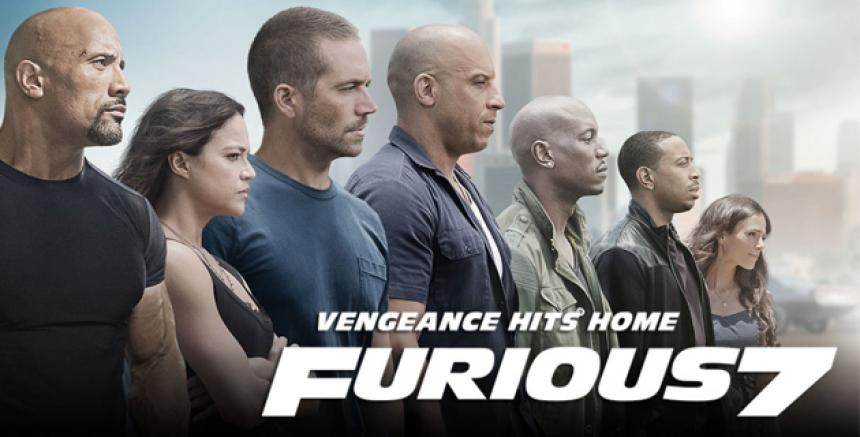

Distribuidora-Universal Pictures Presupuesto-$150 000 000 Recaudacion-$1 671 537 444
Los hermanos Zach y Gray Mitchell visitan la isla Nublar, lugar del Parque Jurásico original, donde un nuevo parque temático llamado Jurassic World (Mundo Jurásico en español) ha operado durante años. El propietario del parque, Simon Masrani, ha alentado al doctor Henry Wu a crear un dinosaurio híbrido para atraer visitantes. Mientras tanto, los niños conocen a su tía, Claire Dearing, gerente de operaciones del parque. Claire asigna a su asistente Zara para ser su guía, pero los niños la evaden y exploran el parque por su cuenta. Owen Grady, un veterano de la Marina, ha estado investigando la inteligencia de Blue, Delta, Charlie y Echo, las cuatro Velociraptores del parque. El jefe de seguridad de InGen, Vic Hoskins, cree que los raptores deben ser entrenados para uso militar a pesar de las objeciones de Owen. Masrani hace que Owen evalúe el recinto del nuevo dinosaurio híbrido del parque, el Indominus rex, antes de que su atracción sea abierta al público. Owen le advierte a Claire sobre el peligro de criar al Indominus en aislamiento, señalando su falta de socialización con otros animales. Cuando descubren que el Indominus parece haber escapado del recinto, Owen y dos compañeros ingresan al recinto a investigar como pudo salir. Sin embargo cuando Claire le pide a central saber la ubicación de la Indominus que supuestamente se había escapado, la central le informa que la misma aun sigue adentro del recinto, capaz de camuflarse y enmascarar su sensor de calor, la Indominus aparece sorpresivamente y devora a los compañeros de Owen antes de escapar del recinto al interior de la isla. Owen sugiere que la Indominus debe ser asesinada cuanto antes, pero en cambio, Masrani envía una unidad especializada equipada con armas no letales para capturarla. Después de que la mayor parte de la unidad es asesinada por la dinosaurio, Claire ordena la evacuación del sector norteño de la isla.
Distribuidora-Walt Disney Studios Motion Pictures Presupuesto-$260 000 000 Recaudacion-$1,188,326,313
En la Roca del Rey, el rey Mufasa (James Earl Jones) y la reina Sarabi (Alfre Woodard) presentan a su hijo recién nacido, Simba (J. D. McCrary), a sus súbditos, dándoles alegría y reverencias por el nacimiento del heredero al trono. Después de la ceremonia, Scar (Chiwetel Ejiofor), el hermano menor de Mufasa, se lamenta de que ya no está en la segunda fila para el trono. Zazú (John Oliver), el toco piquirrojo que trabaja como mayordomo de Mufasa, llega al lugar, anunciando la llegada del rey. Scar intenta comerse a Zazú, pero se ve frustrado por la llegada de Mufasa, quien le pregunta a Scar por qué estuvo ausente en la presentación de Simba, a la que Scar finge habérsele olvidado. Los hermanos tienen una breve y fuerte discusión, en la que Scar socava la autoridad de Mufasa, pero deja en claro que no desafiará el liderazgo del rey. Finalmente, Scar se retira del lugar y Zazú le sugiere a Mufasa que por qué no lo exilia del reino antes de que cause problemas, pero Mufasa se niega a hacer tal cosa, ya que Scar es su hermano. Esa noche, Rafiki (John Kani) dibuja un cuadro de Simba en su árbol. Conforme pasan los meses, Simba se convierte en un cachorro joven y lleno de energía. Una mañana, despierta a su padre y le pide que lo lleve a patrullar por las Tierras del Reino. Mufasa en cambio, lo lleva a la cima de la Roca del Rey y le muestra todo el reino. Posteriormente, Mufasa le menciona a Simba que un día él se convertirá en el nuevo rey soberano de las Tierras del Reino y que todo lo que toque la luz será suyo y además tendrá la responsabilidad de protegerlo. Simba se pregunta hasta dónde se extienden las fronteras del reino y Mufasa le prohíbe visitar el lugar sombrío.

Distribuidora-Walt Disney Studios Motion Pictures Presupuesto-$220 000 000 Recaudacion-$1 520 538 536
El dios asgardiano exiliado Loki se encuentra con El Otro,7 un líder de una raza extraterrestre conocida como los Chitauri. Llega a un trato con ellos; a cambio de recuperar el Teseracto, una fuente de poderosa energía de potencial desconocido, el Otro le promete a Loki un ejército con el que pueda subyugar a la Tierra. Nick Fury, director de la Agencia de espionaje S.H.I.E.L.D. y su teniente, la agente María Hill, llegan a un centro de investigación remoto donde se empieza una evacuación inmediata de las instalaciones y donde el físico Dr. Erik Selvig está liderando la investigación del Teseracto. Inesperadamente el cubo abre un agujero de gusano, permitiendo a Loki llegar a la tierra. Loki consigue robar el Teseracto y utiliza su cetro para lavar el cerebro a Selvig, a un par de agentes y a Clint Barton, quienes huyen con él. En respuesta al ataque, Fury decide reactivar la Iniciativa Vengadores. La agente Natasha Romanoff es contactada por Coulson, quien le informa que Barton ha sido secuestrado y la envía a Calcuta, India a reclutar al Dr. Bruce Banner para que los ayude a rastrear el Teseracto a través de sus emisiones de radiación gamma, mientras, Coulson visita a Anthony "Tony" Stark en la Torre Stark para entregarle una revisión de la investigación de Selvig y finalmente Fury le informa a Steve Rogers y le asigna la tarea de recuperar el Teseracto.

Distribuidora-Universal Pictures Presupuesto-$190 000 000 Recaudacion-$1 515 341 399
Tras derrotar a Owen Shaw y conseguir el indulto por sus crímenes pasados, Dominic Toretto, Brian O'Conner y el equipo han regresado a Estados Unidos para llevar una vida normal. Dom intenta ayudar a Letty Ortiz a recuperar la memoria, mientras Brian se acostumbra a la vida como padre. Mientras tanto, el hermano mayor de Owen, Deckard Shaw, irrumpe en el hospital donde está ingresado el comatoso Owen en Londres, antes de irrumpir en la oficina de campo del DSS en Los Ángeles para extraer los perfiles del equipo de Dom. Tras revelar su identidad, Deckard lucha contra el agente del DSS Luke Hobbs y escapa, detonando una bomba que hiere gravemente a Hobbs. Dom se entera más tarde por su hermana, Mia, de que está embarazada de nuevo y la convence para que se lo diga a Brian. Sin embargo, una carta bomba enviada por Deckard, que al parecer ha matado a Han Lue en Tokio, explota y destruye la casa de los Toretto. Dom viaja a Tokio para recuperar el cuerpo de Han y adquiere de Sean Boswell los objetos encontrados en el lugar del accidente.

Distribuidora-Paramount Pictures Presupuesto-$170 000 000 Recaudacion-$1 493 491 858
El texto de apertura menciona cómo en 1969, la Marina de los EE. UU. estableció una escuela para pilotos de combate. Se la conoce oficialmente como Escuela de Armas de Combate, pero los reclutas la llaman "Top Gun". Vemos varios reclutas y hombres de la Marina en los barcos donde los pilotos despegan o regresan. 36 años después de la primera entrega, el capitán Pete "Maverick" Mitchell está sirviendo como piloto de pruebas de la Marina de los Estados Unidos, para probar nuevos diseños y conceptos de aviones de combate con empresas privadas, y ha esquivado el ascenso para seguir volando después de 33 años de servicio. Mientras el contralmirante Chester "Hammer" planea cerrar el programa hipersónico "Darkstar" scramjet, redirigiendo los fondos a programas de drones, Maverick lleva el prototipo a su objetivo de velocidad Mach 10 antes que Cain pueda llegar a la base, pero decide seguir avanzando hacia la velocidad hipersónica, lo que provoca la destrucción del prototipo. Cain quiere dejar en tierra a Maverick pero no puede, ya que el piloto ha recibido la orden de ir a NAS North Island por parte de su amigo y antiguo rival, el almirante Tom "Iceman" Kazansky, comandante de la Flota del Pacífico de Estados Unidos.